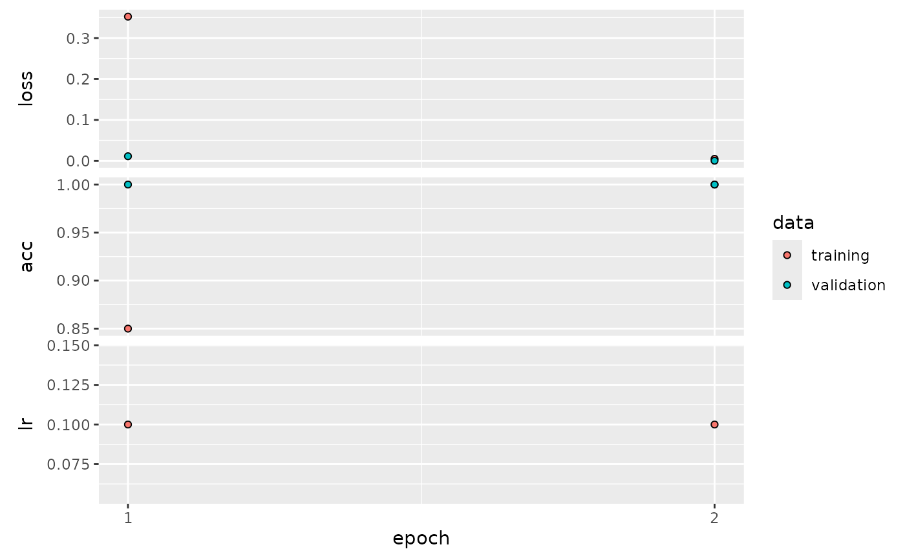

The deepG library offers several options to extract input/target pairs from data. We can differentiate between to main approach:
- Language model: predict a character or several characters in a sequence.
- Label Classification: map a label to a sequence.
Language model
With language model, we mean a model that predicts a character in a
sequence. We have several options to determine the output format of the
data generator using the output_format argument.
The output_format determines the shape of the output for
a language model, i.e. part of a sequence is the input \(X\) and another the target \(Y\). Assume a sequence abcdefg and
maxlen = 6. Output correspond as follows
“target_right”: \(X=\) abcdef, \(Y=\) g
“target_middle_lstm”: \(X =\) (\(X_1 =\) abc, \(X_2 =\) gfe), \(Y=\) d (note reversed order of \(X_2\))
“target_middle_cnn”: \(X =\) abcefg, \(Y =\) d
“wavenet”: \(X =\) abcdef, \(Y =\) bcdefg
Create dummy data
To test the different language model options, we create a simple dummy data set consisting of a repetition of the sequence AAACCCGGGTTTAAACCC….
vocabulary <- c("A", "C", "G", "T")
base_seq <- "AAACCCGGGTTT"
full_seq <- strrep(base_seq, 50)
df <- data.frame(Header = "header", Sequence = full_seq)
# create training fasta file
train_dir <- tempfile()
dir.create(train_dir)
microseq::writeFasta(df, file.path(train_dir, "train_1.fasta"))
# create validation fasta file (use same data as training)
val_dir <- tempfile()
dir.create(val_dir)
microseq::writeFasta(df, file.path(val_dir, "val_1.fasta"))Predict next character
Say we want to predict the next character in a sequence given the last 5 characters and our text consists of the letters A,C,G,T . First we have to create a model. We may use a model with 1 LSTM and 1 dense layer for predictions.
model <- create_model_lstm_cnn(
maxlen = 5,
layer_lstm = c(8),
layer_dense = c(4),
learning_rate = 0.1,
vocabulary_size = 4 # text consists of A,C,G,T
)## Model: "model"
## _________________________________________________________________
## Layer (type) Output Shape Param #
## =================================================================
## input_1 (InputLayer) [(None, 5, 4)] 0
##
## lstm (LSTM) (None, 8) 416
##
## dense (Dense) (None, 4) 36
##
## =================================================================
## Total params: 452 (1.77 KB)
## Trainable params: 452 (1.77 KB)
## Non-trainable params: 0 (0.00 Byte)
## _________________________________________________________________Next we have to specify the location of our training and validation data and the output format of the data generator
hist <- train_model(train_type = "lm", # running a language model
output_format = "target_right", # predict target at end of sequence
model = model,
path = train_dir,
path_val = val_dir,
steps_per_epoch = 5, # use 5 batches per epoch
train_val_ratio = 0.2, # use 20% of samples for validation compared to train
batch_size = 16,
epochs = 4)## Epoch 1/4
## 1/5 [=====>........................] - ETA: 3s - loss: 1.5141 - acc: 0.06255/5 [==============================] - 1s 62ms/step - loss: 1.1724 - acc: 0.5625 - val_loss: 0.5923 - val_acc: 0.8750 - lr: 0.1000
## Epoch 2/4
## 1/5 [=====>........................] - ETA: 0s - loss: 0.7035 - acc: 0.75005/5 [==============================] - 0s 18ms/step - loss: 0.3901 - acc: 0.9375 - val_loss: 0.1212 - val_acc: 1.0000 - lr: 0.1000
## Epoch 3/4
## 1/5 [=====>........................] - ETA: 0s - loss: 0.1357 - acc: 1.00005/5 [==============================] - 0s 16ms/step - loss: 0.0788 - acc: 1.0000 - val_loss: 0.0309 - val_acc: 1.0000 - lr: 0.1000
## Epoch 4/4
## 1/5 [=====>........................] - ETA: 0s - loss: 0.0305 - acc: 1.00005/5 [==============================] - 0s 16ms/step - loss: 0.0224 - acc: 1.0000 - val_loss: 0.0104 - val_acc: 1.0000 - lr: 0.1000
plot(hist)
Predict character in middle of sequence
If we want to predict a character in the middle of a sequence and use LSTM layers, we should split our input into two layers. One layer handles the sequence before and one the input after the target. If, for example
sequence: ACCGTGGAA
then first input corresponds to ACCG and second to
AAGG. We may create a model with two input layers using the
create_model_cnn_lstm_target_middle
model <- create_model_lstm_cnn_target_middle(
maxlen = 5,
layer_lstm = c(8),
layer_dense = c(4),
learning_rate = 0.1,
vocabulary_size = 4
)## Model: "model_1"
## __________________________________________________________________________________________________
## Layer (type) Output Shape Param # Connected to
## ==================================================================================================
## input_2 (InputLayer) [(None, 3, 4)] 0 []
##
## input_3 (InputLayer) [(None, 2, 4)] 0 []
##
## lstm_1 (LSTM) (None, 8) 416 ['input_2[0][0]']
##
## lstm_2 (LSTM) (None, 8) 416 ['input_3[0][0]']
##
## concatenate (Concatenate) (None, 16) 0 ['lstm_1[0][0]',
## 'lstm_2[0][0]']
##
## dense_1 (Dense) (None, 4) 68 ['concatenate[0][0]']
##
## ==================================================================================================
## Total params: 900 (3.52 KB)
## Trainable params: 900 (3.52 KB)
## Non-trainable params: 0 (0.00 Byte)
## __________________________________________________________________________________________________The train_model call is identical to the previous model,
except we have to change the output format of the generator by setting
output_format = "target_middle_lstm". This reverses the
order of the sequence after the target.
hist <- train_model(train_type = "lm", # running a language model
output_format = "target_middle_lstm", # predict target in middle of sequence
model = model,
path = train_dir,
path_val = val_dir,
steps_per_epoch = 5, # use 5 batches per epoch
train_val_ratio = 0.2, # use 20% of samples for validation compared to train
batch_size = 16,
epochs = 4)## Epoch 1/4
## 1/5 [=====>........................] - ETA: 5s - loss: 1.4098 - acc: 0.18755/5 [==============================] - 2s 93ms/step - loss: 0.9637 - acc: 0.5875 - val_loss: 0.2583 - val_acc: 1.0000 - lr: 0.1000
## Epoch 2/4
## 1/5 [=====>........................] - ETA: 0s - loss: 0.2826 - acc: 1.00005/5 [==============================] - 0s 18ms/step - loss: 0.1187 - acc: 1.0000 - val_loss: 0.0117 - val_acc: 1.0000 - lr: 0.1000
## Epoch 3/4
## 1/5 [=====>........................] - ETA: 0s - loss: 0.0128 - acc: 1.00003/5 [=================>............] - ETA: 0s - loss: 0.0078 - acc: 1.00005/5 [==============================] - 0s 28ms/step - loss: 0.0055 - acc: 1.0000 - val_loss: 0.0014 - val_acc: 1.0000 - lr: 0.1000
## Epoch 4/4
## 1/5 [=====>........................] - ETA: 0s - loss: 0.0012 - acc: 1.00005/5 [==============================] - 0s 20ms/step - loss: 8.0184e-04 - acc: 1.0000 - val_loss: 4.9049e-04 - val_acc: 1.0000 - lr: 0.1000
plot(hist)
Masked language model
Here we mask some parts of the input sequence and the model tries to predict the masked regions. Can be used for training BERT-like models. See also this notebook. We can first check how the generator works.
# create dummy training data
nt_seq <- rep(c("A", "C", "G", "T"), each = 25) %>% paste(collapse = "") %>% strrep(10)
df <- data.frame(Sequence = nt_seq, Header = "seq_1")
fasta_path <- tempfile(fileext = ".fasta")
fasta_file <- microseq::writeFasta(df, fasta_path)
masked_lm <- list(mask_rate = 0.10, # replace 10% of input with special mask token
random_rate = 0.03, # set 3% of input to random value
identity_rate = 0.02, # leave 2% unchanged (and set sample weight to 1)
include_sw = TRUE) # 0,1 matrix showing where masking was applied
gen <- get_generator(path = fasta_path,
train_type = "masked_lm",
masked_lm = masked_lm,
batch_size = 1,
n_gram = 1,
n_gram_stride = 1,
return_int = TRUE,
maxlen = 100,
vocabulary = c("A", "C", "G", "T"))
z <- gen()
x <- z[[1]]
y <- z[[2]]
sw <- z[[3]]
df <- data.frame(x = x[1, ], y = y[1, ], sw = sw[1, ])
print(head(df), 10)## x y sw
## 1 5 1 1
## 2 1 1 0
## 3 1 1 0
## 4 1 1 0
## 5 1 1 0
## 6 1 1 0
print(df[ df$sw == 1, ])## x y sw
## 1 5 1 1
## 7 5 1 1
## 14 5 1 1
## 21 1 1 1
## 34 5 2 1
## 43 2 2 1
## 51 4 3 1
## 54 5 3 1
## 59 3 3 1
## 73 5 3 1
## 74 5 3 1
## 79 5 4 1
## 82 5 4 1
## 85 5 4 1
## 87 2 4 1Create the model architecture.
model <- create_model_transformer(
maxlen = 100,
vocabulary_size = 6,
embed_dim = 16,
ff_dim = 32,
pos_encoding = "embedding",
head_size = 20,
num_heads = 4,
layer_dense = 6,
flatten_method = "none",
last_layer_activation = "softmax",
loss_fn = "sparse_categorical_crossentropy",
solver = "adam",
learning_rate = 0.005
)## Model: "model_2"
## ________________________________________________________________________________
## Layer (type) Output Shape Param #
## ================================================================================
## input_4 (InputLayer) [(None, 100)] 0
## layer_pos_embedding (layer_pos_em (None, 100, 16) 1696
## bedding)
## layer_transformer_block (layer_tr (None, 100, 16) 6512
## ansformer_block)
## dense_4 (Dense) (None, 100, 6) 102
## ================================================================================
## Total params: 8310 (32.46 KB)
## Trainable params: 8310 (32.46 KB)
## Non-trainable params: 0 (0.00 Byte)
## ________________________________________________________________________________Train the model.
batch_size <- 128
masked_lm <- list(mask_rate = 0.10, random_rate = 0.03, identity_rate = 0.02, include_sw = TRUE)
hist <- train_model(model = model,
# training args
run_name = "bert_1",
epochs = 8,
steps_per_epoch = 75,
# generator args
maxlen = 100,
train_type = "masked_lm",
path = fasta_path,
path_val = NULL,
batch_size = batch_size,
step = 25,
masked_lm = masked_lm,
proportion_per_seq = 0.97,
return_int = TRUE)## Epoch 1/8
## 1/75 [..............................] - ETA: 1:01 - loss: 0.3509 - acc: 0.1598 2/75 [..............................] - ETA: 4s - loss: 0.3066 - acc: 0.2377 4/75 [>.............................] - ETA: 4s - loss: 0.2655 - acc: 0.3437 5/75 [=>............................] - ETA: 3s - loss: 0.2567 - acc: 0.3964 7/75 [=>............................] - ETA: 3s - loss: 0.2443 - acc: 0.4962 8/75 [==>...........................] - ETA: 3s - loss: 0.2395 - acc: 0.540610/75 [===>..........................] - ETA: 3s - loss: 0.2331 - acc: 0.589611/75 [===>..........................] - ETA: 3s - loss: 0.2306 - acc: 0.608212/75 [===>..........................] - ETA: 3s - loss: 0.2285 - acc: 0.628513/75 [====>.........................] - ETA: 3s - loss: 0.2267 - acc: 0.647814/75 [====>.........................] - ETA: 3s - loss: 0.2252 - acc: 0.664916/75 [=====>........................] - ETA: 3s - loss: 0.2227 - acc: 0.694417/75 [=====>........................] - ETA: 3s - loss: 0.2216 - acc: 0.706419/75 [======>.......................] - ETA: 2s - loss: 0.2198 - acc: 0.726920/75 [=======>......................] - ETA: 2s - loss: 0.2190 - acc: 0.735722/75 [=======>......................] - ETA: 2s - loss: 0.2173 - acc: 0.750924/75 [========>.....................] - ETA: 2s - loss: 0.2157 - acc: 0.763625/75 [=========>....................] - ETA: 2s - loss: 0.2151 - acc: 0.769326/75 [=========>....................] - ETA: 2s - loss: 0.2146 - acc: 0.774428/75 [==========>...................] - ETA: 2s - loss: 0.2135 - acc: 0.783429/75 [==========>...................] - ETA: 2s - loss: 0.2131 - acc: 0.787531/75 [===========>..................] - ETA: 2s - loss: 0.2124 - acc: 0.794833/75 [============>.................] - ETA: 2s - loss: 0.2116 - acc: 0.801334/75 [============>.................] - ETA: 2s - loss: 0.2112 - acc: 0.804236/75 [=============>................] - ETA: 2s - loss: 0.2104 - acc: 0.809737/75 [=============>................] - ETA: 1s - loss: 0.2102 - acc: 0.812238/75 [==============>...............] - ETA: 1s - loss: 0.2100 - acc: 0.814639/75 [==============>...............] - ETA: 1s - loss: 0.2097 - acc: 0.816940/75 [===============>..............] - ETA: 1s - loss: 0.2094 - acc: 0.819142/75 [===============>..............] - ETA: 1s - loss: 0.2088 - acc: 0.823143/75 [================>.............] - ETA: 1s - loss: 0.2087 - acc: 0.824945/75 [=================>............] - ETA: 1s - loss: 0.2082 - acc: 0.828546/75 [=================>............] - ETA: 1s - loss: 0.2079 - acc: 0.830248/75 [==================>...........] - ETA: 1s - loss: 0.2075 - acc: 0.833249/75 [==================>...........] - ETA: 1s - loss: 0.2074 - acc: 0.834650/75 [===================>..........] - ETA: 1s - loss: 0.2073 - acc: 0.836051/75 [===================>..........] - ETA: 1s - loss: 0.2071 - acc: 0.837352/75 [===================>..........] - ETA: 1s - loss: 0.2070 - acc: 0.838654/75 [====================>.........] - ETA: 1s - loss: 0.2066 - acc: 0.841055/75 [=====================>........] - ETA: 1s - loss: 0.2064 - acc: 0.842256/75 [=====================>........] - ETA: 0s - loss: 0.2062 - acc: 0.843457/75 [=====================>........] - ETA: 0s - loss: 0.2061 - acc: 0.844458/75 [======================>.......] - ETA: 0s - loss: 0.2059 - acc: 0.845460/75 [=======================>......] - ETA: 0s - loss: 0.2055 - acc: 0.847462/75 [=======================>......] - ETA: 0s - loss: 0.2052 - acc: 0.849263/75 [========================>.....] - ETA: 0s - loss: 0.2051 - acc: 0.850164/75 [========================>.....] - ETA: 0s - loss: 0.2050 - acc: 0.850965/75 [=========================>....] - ETA: 0s - loss: 0.2050 - acc: 0.851766/75 [=========================>....] - ETA: 0s - loss: 0.2049 - acc: 0.852567/75 [=========================>....] - ETA: 0s - loss: 0.2048 - acc: 0.853268/75 [==========================>...] - ETA: 0s - loss: 0.2048 - acc: 0.854069/75 [==========================>...] - ETA: 0s - loss: 0.2047 - acc: 0.854771/75 [===========================>..] - ETA: 0s - loss: 0.2046 - acc: 0.856172/75 [===========================>..] - ETA: 0s - loss: 0.2044 - acc: 0.856873/75 [============================>.] - ETA: 0s - loss: 0.2043 - acc: 0.857474/75 [============================>.] - ETA: 0s - loss: 0.2042 - acc: 0.858175/75 [==============================] - ETA: 0s - loss: 0.2041 - acc: 0.858775/75 [==============================] - 5s 52ms/step - loss: 0.2041 - acc: 0.8587 - lr: 0.0050
## Epoch 2/8
## 1/75 [..............................] - ETA: 3s - loss: 0.1945 - acc: 0.9055 2/75 [..............................] - ETA: 3s - loss: 0.1968 - acc: 0.9043 3/75 [>.............................] - ETA: 3s - loss: 0.1965 - acc: 0.9051 4/75 [>.............................] - ETA: 3s - loss: 0.1969 - acc: 0.9053 5/75 [=>............................] - ETA: 3s - loss: 0.1978 - acc: 0.9044 6/75 [=>............................] - ETA: 3s - loss: 0.1967 - acc: 0.9051 8/75 [==>...........................] - ETA: 3s - loss: 0.1970 - acc: 0.9052 9/75 [==>...........................] - ETA: 3s - loss: 0.1969 - acc: 0.905411/75 [===>..........................] - ETA: 3s - loss: 0.1969 - acc: 0.905312/75 [===>..........................] - ETA: 3s - loss: 0.1967 - acc: 0.905514/75 [====>.........................] - ETA: 3s - loss: 0.1971 - acc: 0.905315/75 [=====>........................] - ETA: 3s - loss: 0.1971 - acc: 0.905116/75 [=====>........................] - ETA: 3s - loss: 0.1971 - acc: 0.905217/75 [=====>........................] - ETA: 3s - loss: 0.1970 - acc: 0.905318/75 [======>.......................] - ETA: 2s - loss: 0.1969 - acc: 0.905420/75 [=======>......................] - ETA: 2s - loss: 0.1968 - acc: 0.905722/75 [=======>......................] - ETA: 2s - loss: 0.1969 - acc: 0.905823/75 [========>.....................] - ETA: 2s - loss: 0.1966 - acc: 0.905824/75 [========>.....................] - ETA: 2s - loss: 0.1966 - acc: 0.905826/75 [=========>....................] - ETA: 2s - loss: 0.1965 - acc: 0.906128/75 [==========>...................] - ETA: 2s - loss: 0.1967 - acc: 0.906029/75 [==========>...................] - ETA: 2s - loss: 0.1966 - acc: 0.906130/75 [===========>..................] - ETA: 2s - loss: 0.1965 - acc: 0.906131/75 [===========>..................] - ETA: 2s - loss: 0.1963 - acc: 0.906232/75 [===========>..................] - ETA: 2s - loss: 0.1965 - acc: 0.906234/75 [============>.................] - ETA: 2s - loss: 0.1966 - acc: 0.906035/75 [=============>................] - ETA: 2s - loss: 0.1967 - acc: 0.906036/75 [=============>................] - ETA: 2s - loss: 0.1966 - acc: 0.906037/75 [=============>................] - ETA: 1s - loss: 0.1966 - acc: 0.906138/75 [==============>...............] - ETA: 1s - loss: 0.1967 - acc: 0.906140/75 [===============>..............] - ETA: 1s - loss: 0.1968 - acc: 0.906041/75 [===============>..............] - ETA: 1s - loss: 0.1967 - acc: 0.906042/75 [===============>..............] - ETA: 1s - loss: 0.1967 - acc: 0.906143/75 [================>.............] - ETA: 1s - loss: 0.1968 - acc: 0.906144/75 [================>.............] - ETA: 1s - loss: 0.1966 - acc: 0.906245/75 [=================>............] - ETA: 1s - loss: 0.1967 - acc: 0.906146/75 [=================>............] - ETA: 1s - loss: 0.1967 - acc: 0.906247/75 [=================>............] - ETA: 1s - loss: 0.1967 - acc: 0.906148/75 [==================>...........] - ETA: 1s - loss: 0.1967 - acc: 0.906149/75 [==================>...........] - ETA: 1s - loss: 0.1967 - acc: 0.906150/75 [===================>..........] - ETA: 1s - loss: 0.1967 - acc: 0.906252/75 [===================>..........] - ETA: 1s - loss: 0.1967 - acc: 0.906253/75 [====================>.........] - ETA: 1s - loss: 0.1967 - acc: 0.906155/75 [=====================>........] - ETA: 1s - loss: 0.1968 - acc: 0.906156/75 [=====================>........] - ETA: 1s - loss: 0.1967 - acc: 0.906258/75 [======================>.......] - ETA: 0s - loss: 0.1967 - acc: 0.906259/75 [======================>.......] - ETA: 0s - loss: 0.1968 - acc: 0.906261/75 [=======================>......] - ETA: 0s - loss: 0.1967 - acc: 0.906263/75 [========================>.....] - ETA: 0s - loss: 0.1967 - acc: 0.906364/75 [========================>.....] - ETA: 0s - loss: 0.1966 - acc: 0.906366/75 [=========================>....] - ETA: 0s - loss: 0.1966 - acc: 0.906367/75 [=========================>....] - ETA: 0s - loss: 0.1966 - acc: 0.906469/75 [==========================>...] - ETA: 0s - loss: 0.1965 - acc: 0.906570/75 [===========================>..] - ETA: 0s - loss: 0.1965 - acc: 0.906572/75 [===========================>..] - ETA: 0s - loss: 0.1965 - acc: 0.906573/75 [============================>.] - ETA: 0s - loss: 0.1965 - acc: 0.906675/75 [==============================] - ETA: 0s - loss: 0.1965 - acc: 0.906575/75 [==============================] - 4s 53ms/step - loss: 0.1965 - acc: 0.9065 - lr: 0.0050
## Epoch 3/8
## 1/75 [..............................] - ETA: 3s - loss: 0.1949 - acc: 0.9102 3/75 [>.............................] - ETA: 3s - loss: 0.1956 - acc: 0.9099 4/75 [>.............................] - ETA: 3s - loss: 0.1969 - acc: 0.9085 6/75 [=>............................] - ETA: 3s - loss: 0.1959 - acc: 0.9085 7/75 [=>............................] - ETA: 3s - loss: 0.1947 - acc: 0.9094 9/75 [==>...........................] - ETA: 3s - loss: 0.1948 - acc: 0.908910/75 [===>..........................] - ETA: 3s - loss: 0.1947 - acc: 0.909312/75 [===>..........................] - ETA: 3s - loss: 0.1948 - acc: 0.908214/75 [====>.........................] - ETA: 3s - loss: 0.1949 - acc: 0.908015/75 [=====>........................] - ETA: 3s - loss: 0.1949 - acc: 0.908116/75 [=====>........................] - ETA: 3s - loss: 0.1949 - acc: 0.908118/75 [======>.......................] - ETA: 2s - loss: 0.1950 - acc: 0.908320/75 [=======>......................] - ETA: 2s - loss: 0.1947 - acc: 0.908421/75 [=======>......................] - ETA: 2s - loss: 0.1945 - acc: 0.908523/75 [========>.....................] - ETA: 2s - loss: 0.1942 - acc: 0.909024/75 [========>.....................] - ETA: 2s - loss: 0.1940 - acc: 0.909226/75 [=========>....................] - ETA: 2s - loss: 0.1938 - acc: 0.909427/75 [=========>....................] - ETA: 2s - loss: 0.1935 - acc: 0.909729/75 [==========>...................] - ETA: 2s - loss: 0.1934 - acc: 0.909630/75 [===========>..................] - ETA: 2s - loss: 0.1932 - acc: 0.909832/75 [===========>..................] - ETA: 2s - loss: 0.1929 - acc: 0.909733/75 [============>.................] - ETA: 2s - loss: 0.1928 - acc: 0.909735/75 [=============>................] - ETA: 2s - loss: 0.1925 - acc: 0.909436/75 [=============>................] - ETA: 1s - loss: 0.1922 - acc: 0.909238/75 [==============>...............] - ETA: 1s - loss: 0.1913 - acc: 0.908839/75 [==============>...............] - ETA: 1s - loss: 0.1908 - acc: 0.908641/75 [===============>..............] - ETA: 1s - loss: 0.1893 - acc: 0.908142/75 [===============>..............] - ETA: 1s - loss: 0.1884 - acc: 0.907744/75 [================>.............] - ETA: 1s - loss: 0.1864 - acc: 0.906245/75 [=================>............] - ETA: 1s - loss: 0.1854 - acc: 0.904647/75 [=================>............] - ETA: 1s - loss: 0.1833 - acc: 0.901948/75 [==================>...........] - ETA: 1s - loss: 0.1824 - acc: 0.900950/75 [===================>..........] - ETA: 1s - loss: 0.1805 - acc: 0.898451/75 [===================>..........] - ETA: 1s - loss: 0.1791 - acc: 0.898952/75 [===================>..........] - ETA: 1s - loss: 0.1783 - acc: 0.897853/75 [====================>.........] - ETA: 1s - loss: 0.1776 - acc: 0.896754/75 [====================>.........] - ETA: 1s - loss: 0.1767 - acc: 0.896156/75 [=====================>........] - ETA: 0s - loss: 0.1752 - acc: 0.894558/75 [======================>.......] - ETA: 0s - loss: 0.1736 - acc: 0.894559/75 [======================>.......] - ETA: 0s - loss: 0.1728 - acc: 0.894161/75 [=======================>......] - ETA: 0s - loss: 0.1713 - acc: 0.893762/75 [=======================>......] - ETA: 0s - loss: 0.1705 - acc: 0.894264/75 [========================>.....] - ETA: 0s - loss: 0.1690 - acc: 0.894465/75 [=========================>....] - ETA: 0s - loss: 0.1683 - acc: 0.894367/75 [=========================>....] - ETA: 0s - loss: 0.1669 - acc: 0.894568/75 [==========================>...] - ETA: 0s - loss: 0.1663 - acc: 0.894570/75 [===========================>..] - ETA: 0s - loss: 0.1649 - acc: 0.894271/75 [===========================>..] - ETA: 0s - loss: 0.1644 - acc: 0.893473/75 [============================>.] - ETA: 0s - loss: 0.1630 - acc: 0.893774/75 [============================>.] - ETA: 0s - loss: 0.1625 - acc: 0.893175/75 [==============================] - 4s 51ms/step - loss: 0.1618 - acc: 0.8932 - lr: 0.0050
## Epoch 4/8
## 1/75 [..............................] - ETA: 3s - loss: 0.1058 - acc: 0.9376 2/75 [..............................] - ETA: 3s - loss: 0.1082 - acc: 0.9262 4/75 [>.............................] - ETA: 3s - loss: 0.1109 - acc: 0.9185 5/75 [=>............................] - ETA: 3s - loss: 0.1105 - acc: 0.9201 6/75 [=>............................] - ETA: 3s - loss: 0.1090 - acc: 0.9235 7/75 [=>............................] - ETA: 3s - loss: 0.1099 - acc: 0.9220 8/75 [==>...........................] - ETA: 3s - loss: 0.1094 - acc: 0.9221 9/75 [==>...........................] - ETA: 3s - loss: 0.1081 - acc: 0.925910/75 [===>..........................] - ETA: 3s - loss: 0.1075 - acc: 0.927311/75 [===>..........................] - ETA: 3s - loss: 0.1063 - acc: 0.928113/75 [====>.........................] - ETA: 3s - loss: 0.1044 - acc: 0.931014/75 [====>.........................] - ETA: 3s - loss: 0.1032 - acc: 0.932615/75 [=====>........................] - ETA: 3s - loss: 0.1017 - acc: 0.934216/75 [=====>........................] - ETA: 3s - loss: 0.1011 - acc: 0.935018/75 [======>.......................] - ETA: 2s - loss: 0.0982 - acc: 0.937319/75 [======>.......................] - ETA: 2s - loss: 0.0960 - acc: 0.939221/75 [=======>......................] - ETA: 2s - loss: 0.0936 - acc: 0.940322/75 [=======>......................] - ETA: 2s - loss: 0.0922 - acc: 0.940823/75 [========>.....................] - ETA: 2s - loss: 0.0905 - acc: 0.941424/75 [========>.....................] - ETA: 2s - loss: 0.0888 - acc: 0.942226/75 [=========>....................] - ETA: 2s - loss: 0.0859 - acc: 0.944027/75 [=========>....................] - ETA: 2s - loss: 0.0847 - acc: 0.944129/75 [==========>...................] - ETA: 2s - loss: 0.0818 - acc: 0.945930/75 [===========>..................] - ETA: 2s - loss: 0.0805 - acc: 0.946631/75 [===========>..................] - ETA: 2s - loss: 0.0791 - acc: 0.947533/75 [============>.................] - ETA: 2s - loss: 0.0766 - acc: 0.948434/75 [============>.................] - ETA: 2s - loss: 0.0754 - acc: 0.949136/75 [=============>................] - ETA: 1s - loss: 0.0731 - acc: 0.950537/75 [=============>................] - ETA: 1s - loss: 0.0720 - acc: 0.950739/75 [==============>...............] - ETA: 1s - loss: 0.0698 - acc: 0.951140/75 [===============>..............] - ETA: 1s - loss: 0.0689 - acc: 0.951742/75 [===============>..............] - ETA: 1s - loss: 0.0668 - acc: 0.953043/75 [================>.............] - ETA: 1s - loss: 0.0659 - acc: 0.953544/75 [================>.............] - ETA: 1s - loss: 0.0650 - acc: 0.953845/75 [=================>............] - ETA: 1s - loss: 0.0642 - acc: 0.953946/75 [=================>............] - ETA: 1s - loss: 0.0633 - acc: 0.954447/75 [=================>............] - ETA: 1s - loss: 0.0624 - acc: 0.954948/75 [==================>...........] - ETA: 1s - loss: 0.0617 - acc: 0.955149/75 [==================>...........] - ETA: 1s - loss: 0.0610 - acc: 0.955351/75 [===================>..........] - ETA: 1s - loss: 0.0597 - acc: 0.956152/75 [===================>..........] - ETA: 1s - loss: 0.0590 - acc: 0.956553/75 [====================>.........] - ETA: 1s - loss: 0.0583 - acc: 0.956954/75 [====================>.........] - ETA: 1s - loss: 0.0576 - acc: 0.957456/75 [=====================>........] - ETA: 0s - loss: 0.0563 - acc: 0.958158/75 [======================>.......] - ETA: 0s - loss: 0.0551 - acc: 0.958759/75 [======================>.......] - ETA: 0s - loss: 0.0545 - acc: 0.959060/75 [=======================>......] - ETA: 0s - loss: 0.0540 - acc: 0.959362/75 [=======================>......] - ETA: 0s - loss: 0.0530 - acc: 0.960063/75 [========================>.....] - ETA: 0s - loss: 0.0524 - acc: 0.960465/75 [=========================>....] - ETA: 0s - loss: 0.0514 - acc: 0.961166/75 [=========================>....] - ETA: 0s - loss: 0.0509 - acc: 0.961468/75 [==========================>...] - ETA: 0s - loss: 0.0500 - acc: 0.962069/75 [==========================>...] - ETA: 0s - loss: 0.0496 - acc: 0.962270/75 [===========================>..] - ETA: 0s - loss: 0.0492 - acc: 0.962471/75 [===========================>..] - ETA: 0s - loss: 0.0488 - acc: 0.962672/75 [===========================>..] - ETA: 0s - loss: 0.0484 - acc: 0.962874/75 [============================>.] - ETA: 0s - loss: 0.0477 - acc: 0.963275/75 [==============================] - ETA: 0s - loss: 0.0473 - acc: 0.963475/75 [==============================] - 4s 51ms/step - loss: 0.0473 - acc: 0.9634 - lr: 0.0050
## Epoch 5/8
## 1/75 [..............................] - ETA: 3s - loss: 0.0211 - acc: 0.9780 2/75 [..............................] - ETA: 4s - loss: 0.0211 - acc: 0.9803 3/75 [>.............................] - ETA: 4s - loss: 0.0201 - acc: 0.9808 5/75 [=>............................] - ETA: 3s - loss: 0.0206 - acc: 0.9775 6/75 [=>............................] - ETA: 3s - loss: 0.0203 - acc: 0.9778 8/75 [==>...........................] - ETA: 3s - loss: 0.0193 - acc: 0.9792 9/75 [==>...........................] - ETA: 3s - loss: 0.0194 - acc: 0.978610/75 [===>..........................] - ETA: 3s - loss: 0.0196 - acc: 0.978611/75 [===>..........................] - ETA: 3s - loss: 0.0195 - acc: 0.978613/75 [====>.........................] - ETA: 3s - loss: 0.0193 - acc: 0.978614/75 [====>.........................] - ETA: 3s - loss: 0.0193 - acc: 0.978615/75 [=====>........................] - ETA: 3s - loss: 0.0200 - acc: 0.977416/75 [=====>........................] - ETA: 3s - loss: 0.0198 - acc: 0.978017/75 [=====>........................] - ETA: 3s - loss: 0.0196 - acc: 0.978219/75 [======>.......................] - ETA: 2s - loss: 0.0195 - acc: 0.978120/75 [=======>......................] - ETA: 2s - loss: 0.0194 - acc: 0.978322/75 [=======>......................] - ETA: 2s - loss: 0.0191 - acc: 0.978423/75 [========>.....................] - ETA: 2s - loss: 0.0189 - acc: 0.978725/75 [=========>....................] - ETA: 2s - loss: 0.0187 - acc: 0.979226/75 [=========>....................] - ETA: 2s - loss: 0.0184 - acc: 0.979727/75 [=========>....................] - ETA: 2s - loss: 0.0185 - acc: 0.979728/75 [==========>...................] - ETA: 2s - loss: 0.0186 - acc: 0.979629/75 [==========>...................] - ETA: 2s - loss: 0.0185 - acc: 0.979931/75 [===========>..................] - ETA: 2s - loss: 0.0185 - acc: 0.980132/75 [===========>..................] - ETA: 2s - loss: 0.0183 - acc: 0.980234/75 [============>.................] - ETA: 2s - loss: 0.0182 - acc: 0.980435/75 [=============>................] - ETA: 2s - loss: 0.0181 - acc: 0.980537/75 [=============>................] - ETA: 1s - loss: 0.0178 - acc: 0.981138/75 [==============>...............] - ETA: 1s - loss: 0.0178 - acc: 0.981040/75 [===============>..............] - ETA: 1s - loss: 0.0177 - acc: 0.981241/75 [===============>..............] - ETA: 1s - loss: 0.0178 - acc: 0.981043/75 [================>.............] - ETA: 1s - loss: 0.0176 - acc: 0.981244/75 [================>.............] - ETA: 1s - loss: 0.0177 - acc: 0.981146/75 [=================>............] - ETA: 1s - loss: 0.0176 - acc: 0.981248/75 [==================>...........] - ETA: 1s - loss: 0.0174 - acc: 0.981349/75 [==================>...........] - ETA: 1s - loss: 0.0173 - acc: 0.981451/75 [===================>..........] - ETA: 1s - loss: 0.0171 - acc: 0.981652/75 [===================>..........] - ETA: 1s - loss: 0.0173 - acc: 0.981454/75 [====================>.........] - ETA: 1s - loss: 0.0171 - acc: 0.981255/75 [=====================>........] - ETA: 1s - loss: 0.0170 - acc: 0.981356/75 [=====================>........] - ETA: 0s - loss: 0.0169 - acc: 0.981457/75 [=====================>........] - ETA: 0s - loss: 0.0169 - acc: 0.981558/75 [======================>.......] - ETA: 0s - loss: 0.0168 - acc: 0.981460/75 [=======================>......] - ETA: 0s - loss: 0.0171 - acc: 0.981061/75 [=======================>......] - ETA: 0s - loss: 0.0171 - acc: 0.980963/75 [========================>.....] - ETA: 0s - loss: 0.0170 - acc: 0.981064/75 [========================>.....] - ETA: 0s - loss: 0.0170 - acc: 0.981065/75 [=========================>....] - ETA: 0s - loss: 0.0172 - acc: 0.980766/75 [=========================>....] - ETA: 0s - loss: 0.0172 - acc: 0.980867/75 [=========================>....] - ETA: 0s - loss: 0.0171 - acc: 0.980969/75 [==========================>...] - ETA: 0s - loss: 0.0170 - acc: 0.981070/75 [===========================>..] - ETA: 0s - loss: 0.0171 - acc: 0.980871/75 [===========================>..] - ETA: 0s - loss: 0.0171 - acc: 0.980872/75 [===========================>..] - ETA: 0s - loss: 0.0171 - acc: 0.980873/75 [============================>.] - ETA: 0s - loss: 0.0172 - acc: 0.980675/75 [==============================] - ETA: 0s - loss: 0.0171 - acc: 0.980675/75 [==============================] - 4s 52ms/step - loss: 0.0171 - acc: 0.9806 - lr: 0.0050
## Epoch 6/8
## 1/75 [..............................] - ETA: 4s - loss: 0.0150 - acc: 0.9817 3/75 [>.............................] - ETA: 3s - loss: 0.0140 - acc: 0.9843 5/75 [=>............................] - ETA: 3s - loss: 0.0138 - acc: 0.9842 6/75 [=>............................] - ETA: 5s - loss: 0.0137 - acc: 0.9841 8/75 [==>...........................] - ETA: 4s - loss: 0.0137 - acc: 0.9841 9/75 [==>...........................] - ETA: 4s - loss: 0.0142 - acc: 0.983711/75 [===>..........................] - ETA: 3s - loss: 0.0144 - acc: 0.983412/75 [===>..........................] - ETA: 3s - loss: 0.0140 - acc: 0.984014/75 [====>.........................] - ETA: 3s - loss: 0.0141 - acc: 0.983715/75 [=====>........................] - ETA: 3s - loss: 0.0139 - acc: 0.984216/75 [=====>........................] - ETA: 3s - loss: 0.0138 - acc: 0.984417/75 [=====>........................] - ETA: 3s - loss: 0.0135 - acc: 0.984718/75 [======>.......................] - ETA: 3s - loss: 0.0134 - acc: 0.984920/75 [=======>......................] - ETA: 3s - loss: 0.0138 - acc: 0.984321/75 [=======>......................] - ETA: 3s - loss: 0.0135 - acc: 0.984523/75 [========>.....................] - ETA: 2s - loss: 0.0140 - acc: 0.983625/75 [=========>....................] - ETA: 2s - loss: 0.0141 - acc: 0.983526/75 [=========>....................] - ETA: 2s - loss: 0.0142 - acc: 0.983227/75 [=========>....................] - ETA: 2s - loss: 0.0143 - acc: 0.983229/75 [==========>...................] - ETA: 2s - loss: 0.0141 - acc: 0.983330/75 [===========>..................] - ETA: 2s - loss: 0.0140 - acc: 0.983532/75 [===========>..................] - ETA: 2s - loss: 0.0140 - acc: 0.983433/75 [============>.................] - ETA: 2s - loss: 0.0139 - acc: 0.983335/75 [=============>................] - ETA: 2s - loss: 0.0138 - acc: 0.983436/75 [=============>................] - ETA: 2s - loss: 0.0137 - acc: 0.983438/75 [==============>...............] - ETA: 1s - loss: 0.0143 - acc: 0.982339/75 [==============>...............] - ETA: 1s - loss: 0.0144 - acc: 0.982040/75 [===============>..............] - ETA: 1s - loss: 0.0146 - acc: 0.981741/75 [===============>..............] - ETA: 1s - loss: 0.0146 - acc: 0.981442/75 [===============>..............] - ETA: 1s - loss: 0.0147 - acc: 0.981343/75 [================>.............] - ETA: 1s - loss: 0.0149 - acc: 0.981044/75 [================>.............] - ETA: 1s - loss: 0.0149 - acc: 0.980845/75 [=================>............] - ETA: 1s - loss: 0.0149 - acc: 0.980646/75 [=================>............] - ETA: 1s - loss: 0.0150 - acc: 0.980547/75 [=================>............] - ETA: 1s - loss: 0.0149 - acc: 0.980649/75 [==================>...........] - ETA: 1s - loss: 0.0148 - acc: 0.980950/75 [===================>..........] - ETA: 1s - loss: 0.0148 - acc: 0.980952/75 [===================>..........] - ETA: 1s - loss: 0.0146 - acc: 0.980953/75 [====================>.........] - ETA: 1s - loss: 0.0146 - acc: 0.981055/75 [=====================>........] - ETA: 1s - loss: 0.0146 - acc: 0.981056/75 [=====================>........] - ETA: 1s - loss: 0.0146 - acc: 0.980957/75 [=====================>........] - ETA: 0s - loss: 0.0146 - acc: 0.980858/75 [======================>.......] - ETA: 0s - loss: 0.0146 - acc: 0.980859/75 [======================>.......] - ETA: 0s - loss: 0.0144 - acc: 0.981061/75 [=======================>......] - ETA: 0s - loss: 0.0146 - acc: 0.980562/75 [=======================>......] - ETA: 0s - loss: 0.0145 - acc: 0.980664/75 [========================>.....] - ETA: 0s - loss: 0.0144 - acc: 0.980765/75 [=========================>....] - ETA: 0s - loss: 0.0144 - acc: 0.980767/75 [=========================>....] - ETA: 0s - loss: 0.0142 - acc: 0.980968/75 [==========================>...] - ETA: 0s - loss: 0.0142 - acc: 0.981070/75 [===========================>..] - ETA: 0s - loss: 0.0141 - acc: 0.981271/75 [===========================>..] - ETA: 0s - loss: 0.0141 - acc: 0.981373/75 [============================>.] - ETA: 0s - loss: 0.0140 - acc: 0.981474/75 [============================>.] - ETA: 0s - loss: 0.0140 - acc: 0.981475/75 [==============================] - 4s 53ms/step - loss: 0.0139 - acc: 0.9815 - lr: 0.0050
## Epoch 7/8
## 1/75 [..............................] - ETA: 3s - loss: 0.0163 - acc: 0.9784 2/75 [..............................] - ETA: 4s - loss: 0.0165 - acc: 0.9788 3/75 [>.............................] - ETA: 3s - loss: 0.0148 - acc: 0.9809 4/75 [>.............................] - ETA: 3s - loss: 0.0143 - acc: 0.9827 6/75 [=>............................] - ETA: 3s - loss: 0.0127 - acc: 0.9854 7/75 [=>............................] - ETA: 3s - loss: 0.0122 - acc: 0.9859 8/75 [==>...........................] - ETA: 3s - loss: 0.0117 - acc: 0.9869 9/75 [==>...........................] - ETA: 3s - loss: 0.0116 - acc: 0.986810/75 [===>..........................] - ETA: 3s - loss: 0.0115 - acc: 0.987112/75 [===>..........................] - ETA: 3s - loss: 0.0110 - acc: 0.987513/75 [====>.........................] - ETA: 3s - loss: 0.0109 - acc: 0.987715/75 [=====>........................] - ETA: 3s - loss: 0.0109 - acc: 0.987416/75 [=====>........................] - ETA: 3s - loss: 0.0107 - acc: 0.987718/75 [======>.......................] - ETA: 2s - loss: 0.0106 - acc: 0.987619/75 [======>.......................] - ETA: 2s - loss: 0.0107 - acc: 0.987420/75 [=======>......................] - ETA: 2s - loss: 0.0106 - acc: 0.987421/75 [=======>......................] - ETA: 2s - loss: 0.0107 - acc: 0.987422/75 [=======>......................] - ETA: 2s - loss: 0.0105 - acc: 0.987624/75 [========>.....................] - ETA: 2s - loss: 0.0104 - acc: 0.987525/75 [=========>....................] - ETA: 2s - loss: 0.0103 - acc: 0.987826/75 [=========>....................] - ETA: 2s - loss: 0.0102 - acc: 0.987927/75 [=========>....................] - ETA: 2s - loss: 0.0102 - acc: 0.987628/75 [==========>...................] - ETA: 2s - loss: 0.0102 - acc: 0.987530/75 [===========>..................] - ETA: 2s - loss: 0.0101 - acc: 0.987631/75 [===========>..................] - ETA: 2s - loss: 0.0100 - acc: 0.987732/75 [===========>..................] - ETA: 2s - loss: 0.0101 - acc: 0.987633/75 [============>.................] - ETA: 2s - loss: 0.0100 - acc: 0.987734/75 [============>.................] - ETA: 2s - loss: 0.0101 - acc: 0.987536/75 [=============>................] - ETA: 2s - loss: 0.0100 - acc: 0.987738/75 [==============>...............] - ETA: 1s - loss: 0.0101 - acc: 0.987639/75 [==============>...............] - ETA: 1s - loss: 0.0100 - acc: 0.987740/75 [===============>..............] - ETA: 1s - loss: 0.0100 - acc: 0.987841/75 [===============>..............] - ETA: 1s - loss: 0.0101 - acc: 0.987742/75 [===============>..............] - ETA: 1s - loss: 0.0101 - acc: 0.987743/75 [================>.............] - ETA: 1s - loss: 0.0102 - acc: 0.987644/75 [================>.............] - ETA: 1s - loss: 0.0102 - acc: 0.987545/75 [=================>............] - ETA: 1s - loss: 0.0103 - acc: 0.987447/75 [=================>............] - ETA: 1s - loss: 0.0103 - acc: 0.987348/75 [==================>...........] - ETA: 1s - loss: 0.0104 - acc: 0.987349/75 [==================>...........] - ETA: 1s - loss: 0.0105 - acc: 0.987250/75 [===================>..........] - ETA: 1s - loss: 0.0105 - acc: 0.987351/75 [===================>..........] - ETA: 1s - loss: 0.0104 - acc: 0.987452/75 [===================>..........] - ETA: 1s - loss: 0.0104 - acc: 0.987453/75 [====================>.........] - ETA: 1s - loss: 0.0105 - acc: 0.987154/75 [====================>.........] - ETA: 1s - loss: 0.0105 - acc: 0.987156/75 [=====================>........] - ETA: 0s - loss: 0.0105 - acc: 0.987157/75 [=====================>........] - ETA: 0s - loss: 0.0105 - acc: 0.987058/75 [======================>.......] - ETA: 0s - loss: 0.0104 - acc: 0.987159/75 [======================>.......] - ETA: 0s - loss: 0.0104 - acc: 0.987160/75 [=======================>......] - ETA: 0s - loss: 0.0104 - acc: 0.987162/75 [=======================>......] - ETA: 0s - loss: 0.0104 - acc: 0.987163/75 [========================>.....] - ETA: 0s - loss: 0.0104 - acc: 0.987164/75 [========================>.....] - ETA: 0s - loss: 0.0104 - acc: 0.987165/75 [=========================>....] - ETA: 0s - loss: 0.0103 - acc: 0.987166/75 [=========================>....] - ETA: 0s - loss: 0.0103 - acc: 0.987168/75 [==========================>...] - ETA: 0s - loss: 0.0103 - acc: 0.987169/75 [==========================>...] - ETA: 0s - loss: 0.0103 - acc: 0.987070/75 [===========================>..] - ETA: 0s - loss: 0.0103 - acc: 0.987071/75 [===========================>..] - ETA: 0s - loss: 0.0103 - acc: 0.987073/75 [============================>.] - ETA: 0s - loss: 0.0103 - acc: 0.986874/75 [============================>.] - ETA: 0s - loss: 0.0103 - acc: 0.986875/75 [==============================] - 4s 52ms/step - loss: 0.0103 - acc: 0.9868 - lr: 0.0050
## Epoch 8/8
## 1/75 [..............................] - ETA: 4s - loss: 0.0123 - acc: 0.9819 2/75 [..............................] - ETA: 3s - loss: 0.0127 - acc: 0.9832 4/75 [>.............................] - ETA: 3s - loss: 0.0099 - acc: 0.9852 5/75 [=>............................] - ETA: 3s - loss: 0.0105 - acc: 0.9844 6/75 [=>............................] - ETA: 3s - loss: 0.0102 - acc: 0.9851 7/75 [=>............................] - ETA: 3s - loss: 0.0103 - acc: 0.9849 8/75 [==>...........................] - ETA: 3s - loss: 0.0104 - acc: 0.984910/75 [===>..........................] - ETA: 3s - loss: 0.0101 - acc: 0.984811/75 [===>..........................] - ETA: 3s - loss: 0.0100 - acc: 0.984813/75 [====>.........................] - ETA: 3s - loss: 0.0109 - acc: 0.982614/75 [====>.........................] - ETA: 3s - loss: 0.0109 - acc: 0.982516/75 [=====>........................] - ETA: 3s - loss: 0.0107 - acc: 0.983118/75 [======>.......................] - ETA: 2s - loss: 0.0105 - acc: 0.983619/75 [======>.......................] - ETA: 2s - loss: 0.0104 - acc: 0.984020/75 [=======>......................] - ETA: 2s - loss: 0.0104 - acc: 0.984222/75 [=======>......................] - ETA: 2s - loss: 0.0103 - acc: 0.984723/75 [========>.....................] - ETA: 2s - loss: 0.0102 - acc: 0.984824/75 [========>.....................] - ETA: 2s - loss: 0.0105 - acc: 0.984525/75 [=========>....................] - ETA: 2s - loss: 0.0108 - acc: 0.984126/75 [=========>....................] - ETA: 2s - loss: 0.0105 - acc: 0.984628/75 [==========>...................] - ETA: 2s - loss: 0.0103 - acc: 0.985129/75 [==========>...................] - ETA: 2s - loss: 0.0104 - acc: 0.985131/75 [===========>..................] - ETA: 2s - loss: 0.0103 - acc: 0.985532/75 [===========>..................] - ETA: 2s - loss: 0.0101 - acc: 0.985633/75 [============>.................] - ETA: 2s - loss: 0.0101 - acc: 0.985734/75 [============>.................] - ETA: 2s - loss: 0.0102 - acc: 0.985336/75 [=============>................] - ETA: 2s - loss: 0.0103 - acc: 0.985037/75 [=============>................] - ETA: 1s - loss: 0.0104 - acc: 0.984839/75 [==============>...............] - ETA: 1s - loss: 0.0106 - acc: 0.984540/75 [===============>..............] - ETA: 1s - loss: 0.0108 - acc: 0.984042/75 [===============>..............] - ETA: 1s - loss: 0.0108 - acc: 0.984043/75 [================>.............] - ETA: 1s - loss: 0.0109 - acc: 0.984045/75 [=================>............] - ETA: 1s - loss: 0.0109 - acc: 0.983946/75 [=================>............] - ETA: 1s - loss: 0.0109 - acc: 0.983948/75 [==================>...........] - ETA: 1s - loss: 0.0110 - acc: 0.983849/75 [==================>...........] - ETA: 1s - loss: 0.0110 - acc: 0.983950/75 [===================>..........] - ETA: 1s - loss: 0.0110 - acc: 0.983951/75 [===================>..........] - ETA: 1s - loss: 0.0110 - acc: 0.983952/75 [===================>..........] - ETA: 1s - loss: 0.0109 - acc: 0.984154/75 [====================>.........] - ETA: 1s - loss: 0.0109 - acc: 0.984055/75 [=====================>........] - ETA: 1s - loss: 0.0109 - acc: 0.984056/75 [=====================>........] - ETA: 0s - loss: 0.0110 - acc: 0.983957/75 [=====================>........] - ETA: 0s - loss: 0.0110 - acc: 0.984058/75 [======================>.......] - ETA: 0s - loss: 0.0110 - acc: 0.984060/75 [=======================>......] - ETA: 0s - loss: 0.0109 - acc: 0.984161/75 [=======================>......] - ETA: 0s - loss: 0.0108 - acc: 0.984262/75 [=======================>......] - ETA: 0s - loss: 0.0107 - acc: 0.984363/75 [========================>.....] - ETA: 0s - loss: 0.0107 - acc: 0.984264/75 [========================>.....] - ETA: 0s - loss: 0.0107 - acc: 0.984366/75 [=========================>....] - ETA: 0s - loss: 0.0107 - acc: 0.984467/75 [=========================>....] - ETA: 0s - loss: 0.0106 - acc: 0.984568/75 [==========================>...] - ETA: 0s - loss: 0.0106 - acc: 0.984669/75 [==========================>...] - ETA: 0s - loss: 0.0105 - acc: 0.984671/75 [===========================>..] - ETA: 0s - loss: 0.0105 - acc: 0.984872/75 [===========================>..] - ETA: 0s - loss: 0.0104 - acc: 0.985074/75 [============================>.] - ETA: 0s - loss: 0.0104 - acc: 0.985075/75 [==============================] - ETA: 0s - loss: 0.0103 - acc: 0.985175/75 [==============================] - 4s 52ms/step - loss: 0.0103 - acc: 0.9851 - lr: 0.0050## Training done.
plot(hist)Evaluate the trained model.
gen <- get_generator(path = fasta_path,
train_type = "masked_lm",
masked_lm = masked_lm,
batch_size = 1,
n_gram = 1,
n_gram_stride = 1,
return_int = TRUE,
maxlen = 100,
vocabulary = c("A", "C", "G", "T"))
z <- gen()
x <- z[[1]]
y <- z[[2]]
sw <- z[[3]]
pred <- model$predict(x) ## 1/1 [==============================] - ETA: 0s1/1 [==============================] - 0s 97ms/step
pred <- apply(pred[1,,], 1, which.max) - 1
df <- data.frame(x = x[1, ], sw = sw[1, ], y = y[1, ], pred = pred)
head(df)## x sw y pred
## 1 5 1 1 1
## 2 1 0 1 1
## 3 1 0 1 1
## 4 1 0 1 1
## 5 1 0 1 1
## 6 1 0 1 1
df[df$sw == 1, ]## x sw y pred
## 1 5 1 1 1
## 7 5 1 1 1
## 14 5 1 1 1
## 21 1 1 1 1
## 34 5 1 2 2
## 43 2 1 2 2
## 51 4 1 3 3
## 54 5 1 3 3
## 59 3 1 3 3
## 73 5 1 3 3
## 74 5 1 3 3
## 79 5 1 4 4
## 82 5 1 4 4
## 85 5 1 4 4
## 87 2 1 4 4
df2 <- df[df$sw == 1, ]
table(df2$pred, df2$y)##
## 1 2 3 4
## 1 4 0 0 0
## 2 0 2 0 0
## 3 0 0 5 0
## 4 0 0 0 4Label classification
With label classification, we describe the task of mapping a label to a sequence. For example: given the input ACGACCG, does the sequence belong to a viral or bacterial genome?
deepG offers three options to map a label to a sequence
the label gets read from the fasta header
files from every class are in separate folders
get label from csv file
Create dummy data
To test label classification, we create a simple dummy data set. One class consists of random sequences using just A and C and second class uses just G and T.
# create training fasta files
train_dir_1 <- tempfile()
train_dir_2 <- tempfile()
dir.create(train_dir_1)
dir.create(train_dir_2)
train_dir <- list(train_dir_1, train_dir_2)
for (i in 1:2) {
if (i == 1) {
vocabulary <- c("A", "C")
header <- "label_1"
fasta_name_start <- "label_1_train_file"
} else {
vocabulary <- c("G", "T")
header <- "label_2"
fasta_name_start <- "label_2_train_file"
}
create_dummy_data(file_path = train_dir[[i]],
num_files = 3,
seq_length = 20,
num_seq = 5,
header = header,
fasta_name_start = fasta_name_start,
vocabulary = vocabulary)
}
# create validation fasta files
val_dir_1 <- tempfile()
val_dir_2 <- tempfile()
dir.create(val_dir_1)
dir.create(val_dir_2)
val_dir <- list(val_dir_1, val_dir_2)
for (i in 1:2) {
if (i == 1) {
vocabulary <- c("A", "C")
header <- "label_1"
fasta_name_start <- "label_1_val_file"
} else {
vocabulary <- c("G", "T")
header <- "label_2"
fasta_name_start <- "label_2_val_file"
}
create_dummy_data(file_path = val_dir[[i]],
num_files = 3,
seq_length = 20,
num_seq = 5,
header = header,
fasta_name_start = fasta_name_start,
vocabulary = vocabulary)
} Label by folder
In this approach, we put all data from one class into a separate
folder. Say we want to classify if a sequence belongs to a viral or
bacterial genome. We may put all virus and bacteria files into their own
folder. In this case the path and path_val
arguments should be vectors, where each entry is the path to one
class.
First we have to create a model. We may use a model with 1 LSTM and 1 dense layer for predictions. An input sequence has length 5.
model <- create_model_lstm_cnn(
maxlen = 5,
layer_lstm = c(8),
learning_rate = 0.1,
layer_dense = c(2), # binary classification
vocabulary_size = 4 # text consists of A,C,G,T
)## Model: "model_3"
## _________________________________________________________________
## Layer (type) Output Shape Param #
## =================================================================
## input_5 (InputLayer) [(None, 5, 4)] 0
##
## lstm_3 (LSTM) (None, 8) 416
##
## dense_5 (Dense) (None, 2) 18
##
## =================================================================
## Total params: 434 (1.70 KB)
## Trainable params: 434 (1.70 KB)
## Non-trainable params: 0 (0.00 Byte)
## _________________________________________________________________
train_model(train_type = "label_folder", # reading label from folder
model = model,
path = c(train_dir_1, # note that path has two entries
train_dir_2),
path_val = c(val_dir_1,
val_dir_2),
steps_per_epoch = 5, # use 5 batches per epoch
train_val_ratio = 0.2,
batch_size = 8,
epochs = 2,
vocabulary_label = c("label_1", "label_2") # names of classes
)## Epoch 1/2
## 1/5 [=====>........................] - ETA: 3s - loss: 0.6741 - acc: 0.37505/5 [==============================] - 1s 66ms/step - loss: 0.2559 - acc: 0.8750 - val_loss: 0.0033 - val_acc: 1.0000 - lr: 0.1000
## Epoch 2/2
## 1/5 [=====>........................] - ETA: 0s - loss: 0.0030 - acc: 1.00005/5 [==============================] - 0s 20ms/step - loss: 0.0011 - acc: 1.0000 - val_loss: 8.9269e-05 - val_acc: 1.0000 - lr: 0.1000##
## Final epoch (plot to see history):
## loss: 0.001091
## acc: 1
## val_loss: 0.00008927
## val_acc: 1
## lr: 0.1Label by fasta header
The fasta headers in our dummy data have the names “label_1” or “label_2”
files <- list.files(train_dir_1, full.names = TRUE)
fasta_file <- microseq::readFasta(files[1])
head(fasta_file)## # A tibble: 5 × 2
## Header Sequence
## <chr> <chr>
## 1 label_1 CCCACCCCCAACACCAACCC
## 2 label_1 AACCCCCCACCCCAAACCAA
## 3 label_1 CCCAAACACACAACCAAACC
## 4 label_1 ACCCAAAACAAAAACCCCAC
## 5 label_1 CCCAACAACCAAACACACCC
train_model(train_type = "label_header", # reading label from fasta header
model = model,
path = train_dir,
path_val = val_dir,
steps_per_epoch = 5,
train_val_ratio = 0.2,
batch_size = 8,
epochs = 2,
vocabulary_label = c("label_1", "label_2") # names of labels
)## Epoch 1/2
## 1/5 [=====>........................] - ETA: 0s - loss: 8.8941e-05 - acc: 1.00005/5 [==============================] - 0s 23ms/step - loss: 4.4529e-05 - acc: 1.0000 - val_loss: 1.7434e-05 - val_acc: 1.0000 - lr: 0.1000
## Epoch 2/2
## 1/5 [=====>........................] - ETA: 0s - loss: 1.7300e-05 - acc: 1.00005/5 [==============================] - 0s 18ms/step - loss: 9.5903e-06 - acc: 1.0000 - val_loss: 3.1739e-06 - val_acc: 1.0000 - lr: 0.1000##
## Final epoch (plot to see history):
## loss: 0.00000959
## acc: 1
## val_loss: 0.000003174
## val_acc: 1
## lr: 0.1Label from csv file
In this approach we extract the sequence label by mapping the current file name to a csv table.
files_1 <- basename(list.files(c(train_dir_1, val_dir_1)))
files_2 <- basename(list.files(c(train_dir_2, val_dir_2)))
file <- c(files_1, files_2)
label_1 <- stringr::str_detect(file, "label_1") %>% as.integer()
label_2 <- stringr::str_detect(file, "label_2") %>% as.integer()
df <- data.frame(file, label_1, label_2)
df## file label_1 label_2
## 1 label_1_train_file_1.fasta 1 0
## 2 label_1_train_file_2.fasta 1 0
## 3 label_1_train_file_3.fasta 1 0
## 4 label_1_val_file_1.fasta 1 0
## 5 label_1_val_file_2.fasta 1 0
## 6 label_1_val_file_3.fasta 1 0
## 7 label_2_train_file_1.fasta 0 1
## 8 label_2_train_file_2.fasta 0 1
## 9 label_2_train_file_3.fasta 0 1
## 10 label_2_val_file_1.fasta 0 1
## 11 label_2_val_file_2.fasta 0 1
## 12 label_2_val_file_3.fasta 0 1
csv_path <- tempfile(fileext = ".csv")
write.csv(df, csv_path, row.names = FALSE)
hist <- train_model(train_type = "label_csv",
target_from_csv = csv_path,
model = model,
path = train_dir,
path_val = val_dir,
steps_per_epoch = 5,
train_val_ratio = 0.2,
batch_size = 8,
epochs = 2)## Epoch 1/2
## 1/5 [=====>........................] - ETA: 0s - loss: 6.7949e-06 - acc: 1.00005/5 [==============================] - 0s 23ms/step - loss: 4.0293e-06 - acc: 1.0000 - val_loss: 3.7551e-06 - val_acc: 1.0000 - lr: 0.1000
## Epoch 2/2
## 1/5 [=====>........................] - ETA: 0s - loss: 3.7253e-06 - acc: 1.00005/5 [==============================] - 0s 18ms/step - loss: 2.2471e-06 - acc: 1.0000 - val_loss: 9.2387e-07 - val_acc: 1.0000 - lr: 0.1000
plot(hist)
Training with rds files
We can also use rds files files as input, where the data must already
be preprocessed. We may use the dataset_from_gen function
to create rds files from fasta files.
rds_folder_train <- tempfile()
rds_folder_val <- tempfile()
dir.create(rds_folder_train)
dir.create(rds_folder_val)
for (data_type in c("train", "val")) {
if (data_type == "train") {
output_path <- rds_folder_train
path_corpus <- train_dir
} else {
output_path <- rds_folder_val
path_corpus <- val_dir
}
dataset_from_gen(output_path = output_path,
iterations = 25, # create 25 rds files
train_type = "label_folder",
path_corpus = path_corpus,
batch_size = 128,
maxlen = 5,
step = 5,
vocabulary = c("a", "c", "g", "t"),
file_name_start = "batch_")
}We created 25 files for training and validation with preprocessed data.
train_files <- list.files(rds_folder_train, full.names = TRUE)
basename(train_files)## [1] "batch_1.rds" "batch_10.rds" "batch_11.rds" "batch_12.rds" "batch_13.rds"
## [6] "batch_14.rds" "batch_15.rds" "batch_16.rds" "batch_17.rds" "batch_18.rds"
## [11] "batch_19.rds" "batch_2.rds" "batch_20.rds" "batch_21.rds" "batch_22.rds"
## [16] "batch_23.rds" "batch_24.rds" "batch_25.rds" "batch_3.rds" "batch_4.rds"
## [21] "batch_5.rds" "batch_6.rds" "batch_7.rds" "batch_8.rds" "batch_9.rds"## [1] 128 5 4
dim(y)## [1] 128 2
x[1,,]## [,1] [,2] [,3] [,4]
## [1,] 0 1 0 0
## [2,] 0 1 0 0
## [3,] 0 1 0 0
## [4,] 1 0 0 0
## [5,] 0 1 0 0
y[1,]## [1] 1 0We can now use these files for training.
model <- create_model_lstm_cnn(
maxlen = 5,
layer_lstm = c(8),
learning_rate = 0.1,
layer_dense = c(2))## Model: "model_4"
## _________________________________________________________________
## Layer (type) Output Shape Param #
## =================================================================
## input_6 (InputLayer) [(None, 5, 4)] 0
##
## lstm_4 (LSTM) (None, 8) 416
##
## dense_6 (Dense) (None, 2) 18
##
## =================================================================
## Total params: 434 (1.70 KB)
## Trainable params: 434 (1.70 KB)
## Non-trainable params: 0 (0.00 Byte)
## _________________________________________________________________
hist <- train_model(train_type = "label_rds",
model = model,
path = rds_folder_train,
path_val = rds_folder_val,
steps_per_epoch = 5,
format = "rds",
batch_size = 8,
epochs = 2)## Epoch 1/2
## 1/5 [=====>........................] - ETA: 3s - loss: 0.7372 - acc: 0.25005/5 [==============================] - 1s 75ms/step - loss: 0.3524 - acc: 0.8500 - val_loss: 0.0113 - val_acc: 1.0000 - lr: 0.1000
## Epoch 2/2
## 1/5 [=====>........................] - ETA: 0s - loss: 0.0135 - acc: 1.00005/5 [==============================] - 0s 19ms/step - loss: 0.0050 - acc: 1.0000 - val_loss: 3.4114e-04 - val_acc: 1.0000 - lr: 0.1000
plot(hist)